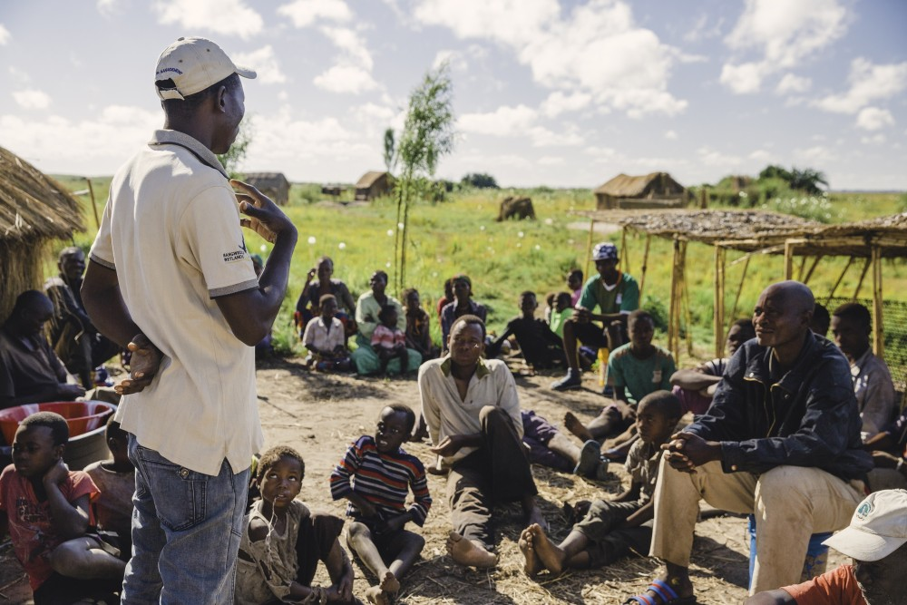

Key points
- Shortages of teachers, health workers, and other trained professionals leave measurable gaps in essential services, particularly in underserved communities.
- A graduate's contribution can extend beyond their workplace through family support, knowledge-sharing, employment, and institutions that serve others.
- Research documents several connections between education and wider social outcomes, but the strength of the evidence varies, and positive outcomes are not guaranteed.
- For students applying for scholarships, understanding these connections can help turn a general ambition to give back into a realistic plan.
1. Overview
A scholarship application often asks students to look ahead: What will you study? What career do you want? How will you use your education to make a difference?
These questions place the applicant at the centre of the story. Yet the reasons for funding someone's education can extend well beyond that individual. A teacher trained today may educate hundreds of children over a career. A graduate who finds stable employment may help a younger sibling remain in school. Someone who has navigated university admissions may later help other students understand a process that once seemed inaccessible.
None of these outcomes follows automatically from earning a degree. They depend on opportunities, resources, and the decisions people make after graduation. Nevertheless, they raise a useful question: What happens to the value of an education when it reaches people other than the person who received it?
This article examines four routes through which that value can spread, what research tells us about their effects, and why the benefits sometimes fall short of expectations.
2. The size of the gap
The potential contribution of a graduate becomes easier to understand when considered alongside the shortages that already exist.
UNHCR's reported education figures for 2025 show that 5.8 million of the world's 13.1 million school-aged refugee children were out of school. That represents 44 percent of refugee children of school age. Primary-level enrolment stood at 65 percent, compared with just 32 percent at secondary level.
Progress at higher levels has been slower, although there has been improvement. Refugee enrolment in higher education reportedly rose from 9 percent in 2024 to 11 percent in 2025. The figure remains below UNHCR's target of 15 percent by 2030.
These numbers describe more than an access problem. When students cannot progress through secondary school and into higher education, the pool of people who can eventually train as teachers, health workers, engineers, researchers, and other professionals also remains limited.
The shortages are visible beyond refugee education.
Teaching. A UNESCO and Teacher Task Force report projects that the world will need 44 million additional primary and secondary teachers by 2030, including 15 million in sub-Saharan Africa. The challenge is not simply to train new teachers. Global primary-teacher attrition nearly doubled between 2015 and 2022, rising from 4.62 percent to 9.06 percent. Training professionals matters, but keeping them in the classroom matters too.
Health. The World Health Organization projects a global shortage of 11.1 million health workers by 2030. Its modelling also points to a substantial workforce gap in Africa, estimated at 6.1 million health workers by that year even under a scenario of considerable workforce growth.
A graduate entering one of these professions will not resolve a national shortage alone. The significance lies in the cumulative effect of training, employing, and retaining enough qualified people to provide essential services.
The figures also help explain why access to education is only part of the challenge. The next question is whether those who complete their studies can use their qualifications where they are needed.
3. Four ways education can reach beyond one person
3.1 Skills that fill a real vacancy
One of the clearest routes from education to community benefit is professional work. A qualified teacher can take responsibility for a classroom; a trained nurse can provide care; an engineer can help maintain essential infrastructure.
The value of these contributions is particularly apparent in places where services already operate with too few trained staff.
An example can be found among DAFI scholarship graduates who trained at Nakuru Teachers Training College and subsequently taught in primary schools in the Dadaab refugee complex. Their experience illustrates a practical connection between educational opportunity and a local need: people who receive professional training can return that training to settings where qualified staff are needed.
The important point is not that every scholarship recipient must become a teacher or work in a refugee camp. It is that education can prepare someone to undertake work that would otherwise remain unfilled or fall to an already overstretched workforce.
There are, however, several steps between receiving a scholarship and filling that gap. Students must complete their courses, obtain any necessary professional recognition, find employment, and have reasons to remain in the profession. A scholarship may open the first door, but the wider benefit depends on what happens afterwards.
3.2 When one graduate's income supports other learners
A graduate's first salary is often discussed as a personal reward for years of study. In households with limited resources, it can also change what other family members are able to do.
Earnings may cover school fees, food, rent, transport, or the cost of applying to university. A younger relative who might otherwise leave school could get another year of education. Parents or other relatives may gain some financial security. The effects are not always dramatic, but they can alter the options available to an entire household.
Research helps put this possibility into perspective. A World Bank review of decades of evidence estimated the average private return to an additional year of schooling at approximately 9 percent. Returns vary by country, education level, gender, and labour-market conditions. The estimate is an average across studies, not a promise that every additional year of education will produce the same financial gain.
The Mastercard Foundation Scholars Program offers another illustration. In a survey of a sample of alumni conducted in 2020/21, 71 percent of university graduates reported being employed, while 40 percent said they supported their siblings' education. Alumni who had become entrepreneurs had collectively created more than 16,000 jobs.
The Foundation published these results in 2022. They describe reported outcomes among the people surveyed at that time; they should not be read as current employment figures for every Scholar or as proof that the programme alone caused those outcomes. The Foundation has since reported supporting more than 58,000 Scholars, a measure of programme reach rather than the number of university graduates.
Taken together, these findings illustrate different ways the effects of education may spread: through earnings, support for other learners, and businesses that provide work for additional people.
They also point to a distinction worth keeping in mind. A graduate's income is a personal economic outcome; what that income makes possible for other people is a wider social effect. The second depends on family circumstances, employment opportunities, and how resources are shared.
3.3 The relationship between education and children's health
Education's effects can reach beyond employment and household income. Research has also examined its relationship with children's survival and health.
A major analysis published in The Lancet, associated with researchers at the Institute for Health Metrics and Evaluation, examined parental education and child mortality. It found that each additional year of maternal education was associated with a lower risk of a child dying before the age of five. The researchers estimated a reduction of approximately 3 percent per additional year. Children whose mothers had completed 12 years of education were estimated to have a risk of under-five mortality more than 30 percent lower than that of children whose mothers had received no schooling.
These are population-level findings, not a prediction for an individual family. Researchers have also used quasi-experimental methods to investigate whether additional maternal schooling itself contributes to improved child survival. Studies in Malawi and Uganda have reported substantial reductions in child mortality associated with additional maternal education.
Several mechanisms may help explain the relationship. Education can improve access to health information, increase a person's ability to navigate health services, and expand the resources available to a household. It may also affect decisions about nutrition, pregnancy, and children's care. These mechanisms interact with factors such as the availability of clinics, the quality of medical services, and household income.
The World Bank has likewise documented relationships between girls' secondary education and outcomes including higher earnings, lower rates of child marriage, and improvements in health and nutrition.
The evidence does not mean that education can substitute for functioning health services. A parent may understand the importance of medical care and still be unable to reach a clinic or afford treatment. Rather, education can strengthen people's ability to benefit from services and information when those resources are available.
Its influence may therefore continue into the next generation, even when the original graduate is no longer directly involved in providing a service.
3.4 Building institutions that continue after one person leaves
Some contributions last only as long as an individual can provide them. Others become more durable when people establish organisations, train colleagues, and create systems that others can maintain.
Wangari Maathai's Green Belt Movement illustrates this broader form of contribution. The movement connected environmental conservation with community participation, including work with women who established tree nurseries. Its activities linked tree planting with livelihoods and local involvement in environmental protection. The United Nations has highlighted the movement's contribution to these efforts.
Muhammad Yunus's work associated with Grameen Bank provides a different example. The institution developed a model intended to expand access to financial services for people traditionally underserved by banks. Its approach influenced microfinance internationally, although microfinance models have also faced criticism over debt burdens, effectiveness, and the distribution of benefits.
A refugee-community example is Elimisha Kakuma, founded in 2021 by former Kakuma students together with their teacher to help refugees prepare for university. Its work reflects a practical form of knowledge-sharing: people familiar with the difficulties of pursuing higher education can help other students navigate similar barriers.
These examples differ in scale, purpose, and context. They should not be treated as evidence that every community initiative will succeed. What they demonstrate is the possibility of moving from individual effort to organised activity.
An organisation can reach more people than one person working alone. It can distribute responsibilities, preserve experience, train new members, and continue operating when its founder is unavailable. But longevity requires more than a compelling mission. Organisations need resources, sound management, community trust, and the ability to learn from mistakes.
For graduates who want to contribute over the long term, the question is therefore not only what they can do personally, but also what they can help others do without them.

4. Must graduates return for their education to benefit others?
One common concern about international education is brain drain. Students receive training abroad but remain there after graduation, leaving their countries of origin without the skills they might have contributed.
The evidence is more complicated than a simple choice between returning and staying.
The UC Berkeley African Alumni Project followed nearly 300 sub-Saharan African graduates of six universities in the United States, Canada, and Central America across a period spanning 1966 to 2014. The project reported strong commitments among participants to African development and found that graduate students were significantly more likely to return than undergraduates.
Those findings provide useful insight into one group of alumni, but they cannot establish what all international graduates will do. Return decisions are shaped by employment prospects, personal safety, family responsibilities, legal status, and opportunities for professional advancement.
The issue is particularly important in health care. The WHO has warned that international recruitment must not undermine the health systems of countries already facing critical workforce shortages. Training more professionals in a country does little to address local needs if working conditions and recruitment pressures continually draw them away.
For refugees, the question of returning can involve circumstances beyond an individual's control. Someone may complete a degree and want to contribute to their community but face restrictions on movement, employment, documentation, or professional practice. Another graduate may be unable to return safely to their country of origin.
Contribution therefore does not always require physical return. Graduates may mentor students remotely, support educational initiatives, share specialist knowledge, conduct research with local organisations, or help connect community projects with professional networks.
These alternatives are not identical to having trained professionals available locally. Remote mentoring cannot replace a nurse in an understaffed clinic, for example. Nevertheless, they show why a graduate's contribution should be assessed by what they can realistically do, rather than by location alone.
The broader issue is whether education systems, employers, governments, and communities create conditions in which graduates can use their skills productively.
5. Why the benefits are not guaranteed
It is tempting to treat education as an investment whose returns will naturally reach the wider community. In reality, several obstacles can interrupt that process.
Funding can determine who gets the opportunity in the first place. Refugee students may face school fees, living expenses, transport costs, and application requirements that are difficult to meet without external support. UNHCR has warned that funding cuts threaten progress in refugee education. When scholarships are reduced, capable students may never reach the stage at which they can train for professions where workers are needed.
Qualifications do not automatically create employment. A graduate may finish university but struggle to find work, lack access to the licensing process, or discover that their qualification is not recognised by a potential employer. For refugees, documentation and work-authorisation requirements may create additional difficulties. In Kenya, it is important to distinguish these practical and administrative barriers from a blanket claim that refugees have no right to work; the applicable rules and an individual's circumstances matter.
Workers must be able to remain in their professions. The projected shortages of teachers and health workers are not simply a question of how many people receive training. Attrition, working conditions, inadequate facilities, safety concerns, and limited career progression can all make it difficult to retain qualified staff. A community may help train a professional and still lose that person if the conditions for doing the job are unsustainable.
Social change can carry personal risks. Wangari Maathai experienced harassment, beatings, and arrest during her environmental and civic work. Her experience demonstrates that contributing to a community is not always a straightforward process of identifying a problem and solving it. People who challenge established interests may need legal protection, organisational support, and allies.
Well-intentioned programmes can produce disappointing results. The debates surrounding microfinance demonstrate why an initiative should be judged by its actual outcomes, not simply by the purpose it claims to serve. Expanding access to credit, for example, does not guarantee that borrowers will escape poverty or avoid harmful debt. The same principle applies to educational and development programmes: their effects require evaluation, transparency, and willingness to change approaches that are not working.
These limitations do not undermine the case for education. They clarify what must accompany it. Scholarships create opportunities; employers provide places to use skills; legal frameworks shape access to work; and effective institutions help sustain the benefits.
Without these conditions, some of the potential value of educational investment may never reach the people it was intended to serve.
6. What this means for a scholarship applicant
Understanding education's wider effects can help students make decisions that go beyond choosing a course with a promising career path. It can also help them explain their goals more convincingly in scholarship applications.
Start with a problem you can describe precisely. Instead of saying that you want to improve your community, identify a particular gap. Is it a shortage of trained teachers, limited access to reliable educational information, weak digital skills, or difficulty navigating university applications? The more clearly you define the problem, the easier it becomes to explain why your proposed course is relevant.
Connect your course to a plausible contribution. A student studying computer science might eventually develop digital tools for education, improve the management of community information, or help local organisations solve technical problems. A future teacher might contribute through classroom instruction and mentoring. These are possibilities rather than guaranteed outcomes, and each requires appropriate skills and opportunities.
The aim is not to choose a degree solely because a community needs people in that field. It is to understand where your interests and abilities might meet a genuine need.
Consider what you can contribute before graduation. Community involvement does not have to wait until someone has a degree, a salary, or a formal position. Tutoring, mentoring younger students, sharing verified scholarship information, and helping peers understand application requirements are smaller contributions that can begin during study. They should be realistic enough to continue alongside academic responsibilities.
Think beyond individual effort. A project that depends entirely on one person's time may stop when that person becomes busy or moves away. Working with a school, student association, community organisation, or group of volunteers can help distribute responsibilities and preserve useful knowledge. Collaboration is particularly important when a project is intended to serve people over several years.
Use evidence without promising more than you can deliver. Scholarship applications often invite applicants to explain how their education will benefit others. Evidence about workforce shortages, educational access, or community needs can support that explanation. But a statistic showing a shortage of millions of teachers does not prove that one applicant will solve it. A stronger argument identifies a manageable contribution and explains how it connects to a larger problem.
For example, an applicant who wants to study technology could explain the barriers students face when finding reliable scholarship information, describe the technical skills they hope to acquire, and outline a practical way to make information easier to access. That is more informative than promising to transform education across an entire region.
A credible plan can change as a student's skills, circumstances, and opportunities develop. What matters is that the connection between education and the intended contribution is clear, grounded in a real need, and open to revision.
7. Conclusion
The value of education does not stop at graduation or remain confined to a graduate's earnings. It can reach a classroom through a trained teacher, a household through financial support, a child's future through better access to knowledge and services, or a wider community through an organisation that continues operating after its founder leaves.
Research and programme reports provide evidence of these different pathways, but they do not suggest that every graduate will produce the same outcomes. Employment, legal access to work, funding, retention, and institutional quality all affect whether an educational opportunity translates into wider benefits.
For students seeking scholarships, this distinction matters. A degree can provide knowledge and qualifications, but the opportunity to apply them depends on circumstances beyond the classroom. Thinking about those circumstances can help applicants choose courses thoughtfully, set realistic goals, and identify ways to contribute during and after their studies.
The central question is not simply whether education changes a graduate's life. It is whether the knowledge, resources, and opportunities gained through education can be put to use in ways that other people can also benefit from.
That question remains particularly important for refugee education. When access to higher education is limited, when funding is uncertain, and when graduates face barriers to employment, the potential contribution of skilled people can be lost or delayed. Expanding access is therefore only one part of the task. The other is creating conditions in which people can use what they have learned.
A scholarship may begin as an opportunity offered to one student. Its wider value depends on what that opportunity makes possible next.